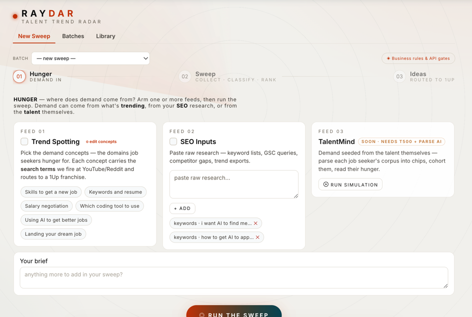
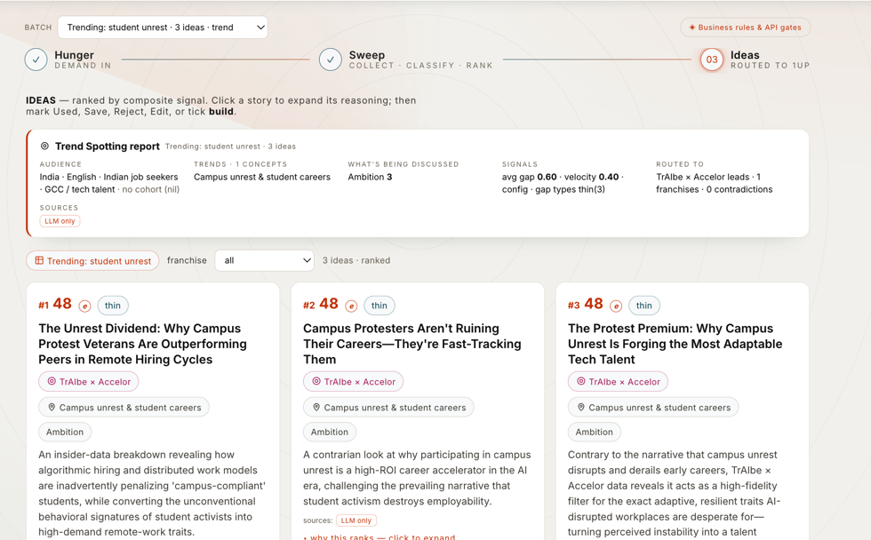

We help the people who already know your audience.
Your content team doesn't lack ideas — it lacks a reliable read on which idea is worth making this week, and the proof to back it. RayDar is that read: a monthly radar sweep over live demand that turns noise into a short, ranked, briefed list.
For whom
Content, brand and community teams at Talent500 who publish for Indian job seekers and GCC-tech talent.
Built on what already exists
No new data to collect. It listens to public signal — YouTube, Reddit, news — that your audience is already generating, every day.
A brief, never the copy
RayDar hands your writer a heading and a topic guide — the angle, the evidence, the audience. Your team writes the words.
A Monday that used to take a day, done before coffee.
The same team, the same brand — but now every idea arrives with its reason attached.
Instead of a blank calendar and a gut feel, she opens a sweep: 18 ideas, ranked. The top one isn't the loudest topic — it's the one where thousands are asking and almost no one is answering well. The gap is the opportunity, and RayDar found it.
He doesn't start cold. The brief already names the angle, quotes the real Reddit thread it came from, and flags the popular belief to push against — "campus protest hurts your career" — with the counter-signal to prove it wrong.
When asked "why this, why now?", she clicks one idea and reads its score: demand strength, momentum, strategic fit, and how well past ideas like it performed. The plan is auditable — not a hunch.
One input — hunger — flows through eight stages to a ranked idea.
Watch it build. Each stage below is exactly what runs, in order, when you press Run the sweep. Every step is editable in-app under Business Rules — no code, no deploy.
Hunger — where demand comes from
InputYou arm one or more feeds: Trend Spotting (pick the demand concepts your audience hungers for), SEO Inputs (paste keyword / GSC / competitor research), and — soon — TalentMind (seed demand from each job seeker's own profile). Each concept carries its own search terms and routes to a 1Up franchise.
Collect — cast the net wide
Live webEach concept's search terms are fired at the open web: fresh YouTube videos (with view counts and the comments — the real feeling), and Reddit posts with their comment trees — the highest-value signal there is. News and Google headlines add context.
Classify — tag every item
AIAn LLM reads each item and tags it: which demand topic (1–6 or Emerging), which 1Up franchise it belongs to, the emotional register (FOMO · Anxiety · Optimism · Ambition), and the underlying question the person is really asking.
Signal — measure the gap
StatisticsPer topic, RayDar computes the numbers that decide rank: demand (how many are asking), supply (how much good content exists), velocity (views per day, the momentum), and the gap between demand and supply. It also names the gap type — emerging, unanswered, thin or stale.
Ideate — write the brief
AIFor each topic the engine drafts three angles — core, contrarian and insider-data (one always pushes against a popular-but-wrong belief). Each becomes a heading + topic-guide brief, grounded in the real feed, under your editable guardrails (India-English voice, never finished copy), routed to a 1Up + register.
Validate — ground & fact-check
EvidenceBefore an idea is trusted, research APIs pull supporting facts and cite the source URLs, and flag anything that contradicts the claim. The rule is absolute: RayDar proposes, it never asserts — a contradiction is raised for a human to verify, never stated as fact.
Rank — the composite score
ScoringEvery idea gets one number: a weighted blend of gap, velocity, strategic weight and how well past ideas from its franchise performed. The list sorts by it — the strongest signal on top. The weights are yours to edit. (Full breakdown in §06.)
Ideas — routed to 1Up, ready to review
OutputThe ranked ideas land as cards, each routed to its franchise with a trend report and an explainable "why this ranks" popup. Your team marks each Used · Saved · Rejected · Edit · Build — and that feedback teaches the next sweep which franchises to trust.
Every API, and exactly what it does.
RayDar orchestrates three kinds of service: feeds that sense demand, research that validates, and AI pipelines that reason. Every key is bring-your-own, encrypted, and gated per-source in Business Rules — query params, prompt, model and on/off, all editable.
YouTube Data API v3
DemandSearches fresh videos (India, English, last 30 days, by view count), then pulls each video's statistics and its top comment threads. The views give momentum; the comments give the raw, unfiltered voice.
Reddit API
DemandOAuth into the career subreddits — developersIndia, IndianWorkplace, IndiaCareers, cscareerquestions, leetcode — and reads top posts with their comment trees. The candid back-and-forth is the highest-value demand signal RayDar has.
NewsAPI
DemandRecent English articles on each topic — context and timing, so an idea can ride a real news moment rather than float free.
SerpAPI · Google News
DemandPulls trending India headlines for a topic — a mainstream cross-check that a niche signal is actually surfacing more broadly.
Tavily
ValidateThe primary validator — searches, returns a direct answer plus cited sources, and flags claims that conflict with the feed. This is what turns an idea from "plausible" into "evidenced".
Serper
ValidateGoogle-grade grounding with answer boxes and knowledge-graph snippets, each with a link — a second, independent check on any claim.
Perplexity · Sonar
ValidateResearch-and-cite in one call, tuned to India-English context — good for the "is this actually true?" pass with references attached.
Exa & Brave
ValidateOptional neural + web search for a wider net of corroborating sources when a claim needs more triangulation. Off by default.
Google Fact Check
ValidateChecks a claim against published fact-checks and flags anything contradicted — it never asserts on its own, only surfaces for a human.
Wikidata
ValidateGrounds entities and definitions against Wikipedia / Wikidata — keeps names, facts and figures honest.
hunger-generate
AIFrames the cohort's hunger from Trend Spotting or SEO inputs — what they search, watch and complain about — and returns the demand topics to sweep.
raydar-classify
AITags every collected item: demand topic, 1Up franchise, the four emotional registers, and the underlying question.
feedstory-generate
AIWrites each idea — heading + topic-guide brief — grounded in the feed and research, under your editable audience/voice guardrails.
raydar-rank
AIComputes the composite score from the four signals and orders the ideas. Weights live in an editable business rule.
raydar-contradiction
AIThe validation pass — reconciles an idea against research, attaches evidence, and raises contradictions for human review.
cohort-nl-query
AITalentMind (Phase 2) — parses each job seeker's own corpus into chips, cohorts them, and reads their hunger directly.
Any anthropic-compatible LLM plugs in — Claude, GPT, Gemini, Z.AI, DeepSeek, x.AI. Without feed keys RayDar still produces real ideas from your concepts + brief; demand simply shows as config rather than live.
The whole sweep, on two screens.
Arm the feeds, run the sweep, read the ranked ideas — each one openable to its reasoning.

01 · Hunger. Three feeds — Trend Spotting (concept chips, each with its own search terms), SEO Inputs (paste raw research), and TalentMind (demand seeded from the talent themselves). Add a brief, then run the sweep.

03 · Ideas. A trend report sits above the batch — audience, concepts, what's being discussed, the signals (avg gap, velocity), and routing. Below it, ideas ranked by composite score, each with a franchise tag, an emotional register, and a "why this ranks — click to expand".
One number, and you can open every part of it.
RayDar never asks you to trust a black box. The rank is a plain weighted sum of four signals — each one measured, each one editable, each one shown back to you on the idea.
Gap
Demand ÷ supply-quality. How many are asking versus how much good content already answers them. A high gap = loud demand, thin supply — the real opportunity.
Velocity
Momentum — top views per day across matched videos, log-normalised (~100k/day → 1.0). Rewards a topic that's accelerating now. Directional, not precise.
Strategic
Your priority weight for the topic, from an editable map (e.g. "Keywords & resume" 0.90, "Which coding tool" 0.60). This is where business strategy enters the maths.
Historical
How often past ideas from this 1Up franchise were marked Used. The feedback loop: what your team actually publishes teaches the next sweep what to trust.
The exact panel a reviewer opens on an idea. Signals in, weighted, summed.
The same object is stored on every idea (gap · velocity · strategic · historical · weights · demand · supply · live · sources) — so the score is reproducible, and "why this ranks" is never a story we tell after the fact.
The questions RayDar is really answering.
No dashboards to learn. Behind every sweep are the questions your team already asks each month.
The same instinct that makes Talent500 trusted with people's careers — listen first, then act — is what RayDar puts to work on content. It's not a trend chaser. It's the discipline of hearing demand clearly, and answering it with evidence.
| For your team | Today | With RayDar |
|---|---|---|
| Choosing the month's topics | Gut feel, a scan of what's trending, a blank calendar. | A ranked list where the top idea is the biggest demand-supply gap, not the loudest noise. |
| Backing a decision | "I think this will do well." | An openable score — demand, momentum, strategy, track record — you can defend in a review. |
| Finding an angle | Whatever everyone else is already saying. | A contrarian, evidence-backed take that pushes against a popular-but-wrong belief. |
| Trusting a claim | Hope it's right. | Validated and cited before it ships — a proposal for a human, never an assertion. |
| Getting better over time | Every month starts from scratch. | What you mark "Used" feeds back into the ranking — the radar tunes to you. |